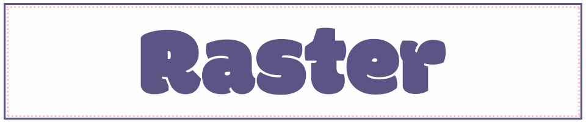
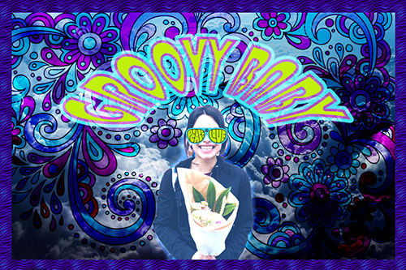

Home | Pixels | Vector | Motion | Print | Contact
The raster project was difficult because I have no prior design experience.
I was unsure about my color pallete, placement, balance, etc. I was also unsure about the photo I used as focus.
As far as technicalities, I found Photoshop relatively simple to use. So once I got started, I ran with a funky, 70s vibe.